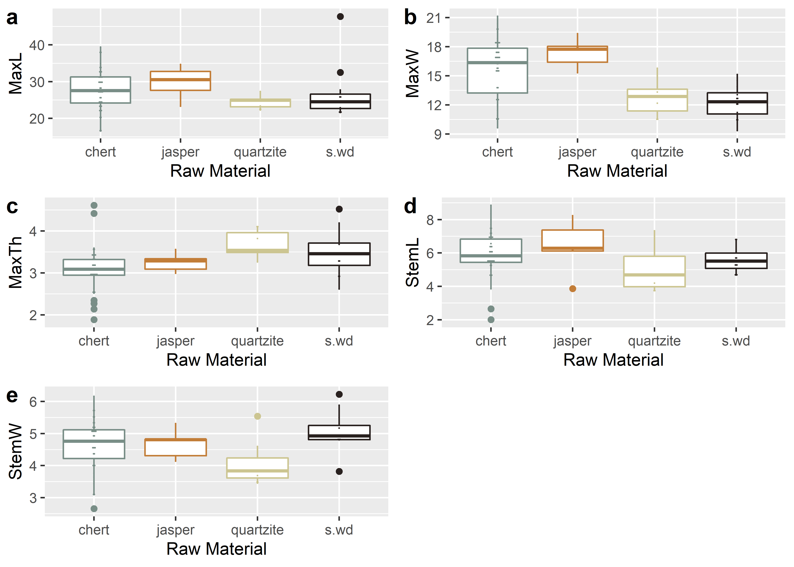
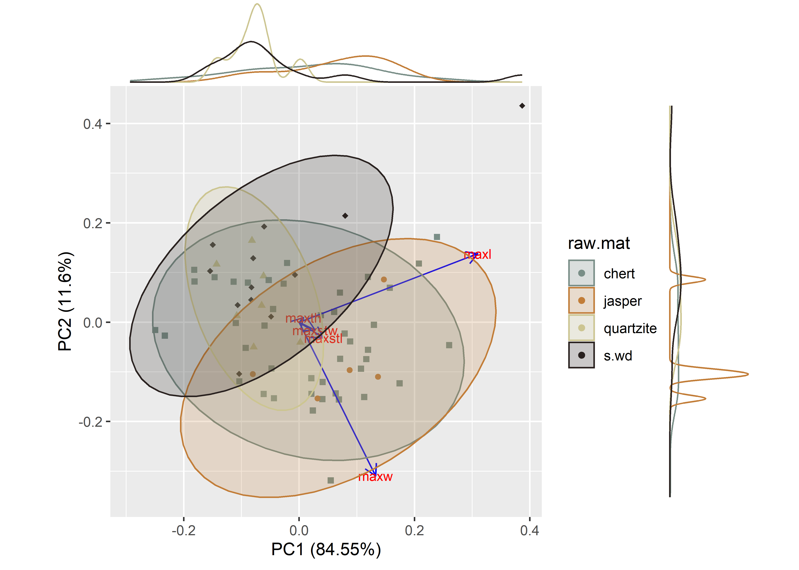

Chapter 1 Linear morphometrics
# install required analysis packages
#devtools::install_github("tidyverse/tidyverse")
#devtools::install_github("mlcollyer/RRPP")
#devtools::install_github("kassambara/ggpubr")
#devtools::install_github("sinhrks/ggfortify")
#devtools::install_github("daattali/ggExtra")
# load libraries
library(here)## here() starts at C:/Users/selde/Desktop/github/perdiz.3/supplibrary(tidyverse)## -- Attaching packages --------------------------------------- tidyverse 1.3.0 --## v ggplot2 3.3.3 v purrr 0.3.4
## v tibble 3.1.0 v dplyr 1.0.5
## v tidyr 1.1.3 v stringr 1.4.0
## v readr 1.4.0 v forcats 0.5.1## -- Conflicts ------------------------------------------ tidyverse_conflicts() --
## x dplyr::filter() masks stats::filter()
## x dplyr::lag() masks stats::lag()library(RRPP)
library(ggpubr)
library(ggfortify)
library(cluster)
library(wesanderson)
library(ggExtra)1.1 Read data and define variables
# read data
data <- read.csv("qdata.csv", header = TRUE, as.is=TRUE)
# define variables
maxl <- data$maxl # maximum length
maxw <- data$maxw # maximum width
maxth <- data$maxth # maximum thickness
maxstl <- data$maxstl # maximum stem length
maxstw <- data$maxstw # maximum stem width
raw.mat <- data$raw.mat # raw material1.2 Boxplots for variable by raw material
# boxplot of maximum length ~ raw.mat
raw.matmaxl <- ggplot(data, aes(x = raw.mat, y = maxl, color = raw.mat)) +
geom_boxplot() +
geom_dotplot(binaxis = 'y',stackdir = 'center',dotsize = 0.2) +
scale_colour_manual(values = wes_palette("Moonrise2")) +
theme(legend.position = "none") +
labs(x = 'Raw Material', y = 'MaxL')
# boxplot of maximum width ~ raw.mat
raw.matmaxw <- ggplot(data, aes(x = raw.mat, y = maxw, color = raw.mat)) +
geom_boxplot() +
geom_dotplot(binaxis = 'y',stackdir = 'center',dotsize = 0.2) +
scale_colour_manual(values = wes_palette("Moonrise2")) +
theme(legend.position = "none") +
labs(x = 'Raw Material', y = 'MaxW')
# boxplot of maximum thickness ~ raw.mat
raw.matmaxth <- ggplot(data, aes(x = raw.mat, y = maxth, color = raw.mat)) +
geom_boxplot() +
geom_dotplot(binaxis = 'y',stackdir = 'center',dotsize = 0.2) +
scale_colour_manual(values = wes_palette("Moonrise2")) +
theme(legend.position = "none") +
labs(x = 'Raw Material', y = 'MaxTh')
# boxplot of stem length ~ raw.mat
raw.matmaxstl <- ggplot(data, aes(x = raw.mat, y = maxstl, color = raw.mat)) +
geom_boxplot() +
geom_dotplot(binaxis = 'y',stackdir = 'center',dotsize = 0.2) +
scale_colour_manual(values = wes_palette("Moonrise2")) +
theme(legend.position = "none") +
labs(x = 'Raw Material', y = 'StemL')
# boxplot of stem width ~ raw.mat
raw.matmaxstw <- ggplot(data, aes(x = raw.mat, y = maxstw, color = raw.mat)) +
geom_boxplot() +
geom_dotplot(binaxis = 'y', stackdir = 'center', dotsize = 0.2) +
scale_colour_manual(values = wes_palette("Moonrise2")) +
theme(legend.position = "none") +
labs(x = 'Raw Material', y = 'StemW')
# render figure
raw.matfigure <- ggarrange(raw.matmaxl, raw.matmaxw, raw.matmaxth, raw.matmaxstl, raw.matmaxstw,
labels = c("a","b","c","d","e"),
ncol = 2, nrow = 3)## `stat_bindot()` using `bins = 30`. Pick better value with `binwidth`.
## `stat_bindot()` using `bins = 30`. Pick better value with `binwidth`.
## `stat_bindot()` using `bins = 30`. Pick better value with `binwidth`.
## `stat_bindot()` using `bins = 30`. Pick better value with `binwidth`.
## `stat_bindot()` using `bins = 30`. Pick better value with `binwidth`.## plot figure
raw.matfigure

(#fig:boxraw.mat)Boxplots for maximum length, width, thickness, stem length, and stem width for Perdiz arrow points.
1.3 Principal Components Analysis
# attributes for plot
df<-data[c(4:8)]
pch.gps.gp <- c(15:18)[as.factor(raw.mat)]
col.gps.gp <- wes_palette("Moonrise2")[as.factor(raw.mat)]
## pca plot
pca <- autoplot(prcomp(df),
data = data,
asp = 1,
shape = pch.gps.gp,
colour = "raw.mat",
variance_percentage = TRUE,
loadings = TRUE,
loadings.colour = 'blue',
loadings.label = TRUE,
loadings.label.size = 3,
frame = TRUE,
frame.type = 't') +
scale_fill_manual(values = wes_palette("Moonrise2")) +
scale_colour_manual(values = wes_palette("Moonrise2"))
ggMarginal(pca, groupColour = TRUE)

(#fig:pcaraw.mat)Principal components analysis by raw material.
1.4 Analyses of Variance (ANOVA) for variable ~ raw.mat
1.4.1 Maximum length of Perdiz arrow points
# anova = maximum length ~ raw.mat
raw.matml <- lm.rrpp(maxl ~ raw.mat,
SS.type = "I",
data = data, iter = 9999,
print.progress = FALSE)
anova(raw.matml)##
## Analysis of Variance, using Residual Randomization
## Permutation procedure: Randomization of null model residuals
## Number of permutations: 10000
## Estimation method: Ordinary Least Squares
## Sums of Squares and Cross-products: Type I
## Effect sizes (Z) based on F distributions
##
## Df SS MS Rsq F Z Pr(>F)
## raw.mat 3 105.23 35.076 0.05329 1.1821 0.47233 0.3216
## Residuals 63 1869.35 29.672 0.94671
## Total 66 1974.58
##
## Call: lm.rrpp(f1 = maxl ~ raw.mat, iter = 9999, SS.type = "I", data = data,
## print.progress = FALSE)1.4.2 Maximum width of Perdiz arrow points
# anova = maximum width ~ raw.mat
raw.matmw <- lm.rrpp(maxw ~ raw.mat,
SS.type = "I",
data = data,
iter = 9999,
print.progress = FALSE)
anova(raw.matmw)##
## Analysis of Variance, using Residual Randomization
## Permutation procedure: Randomization of null model residuals
## Number of permutations: 10000
## Estimation method: Ordinary Least Squares
## Sums of Squares and Cross-products: Type I
## Effect sizes (Z) based on F distributions
##
## Df SS MS Rsq F Z Pr(>F)
## raw.mat 3 171.40 57.135 0.27764 8.0715 3.6253 3e-04 ***
## Residuals 63 445.95 7.079 0.72236
## Total 66 617.36
## ---
## Signif. codes: 0 '***' 0.001 '**' 0.01 '*' 0.05 '.' 0.1 ' ' 1
##
## Call: lm.rrpp(f1 = maxw ~ raw.mat, iter = 9999, SS.type = "I", data = data,
## print.progress = FALSE)# pairwise comparison of LS means = which differ?
maxw.rm <- pairwise(raw.matmw,
groups = data$raw.mat)
summary(maxw.rm,
confidence = 0.95,
test.type = "dist")##
## Pairwise comparisons
##
## Groups: chert jasper quartzite s.wd
##
## RRPP: 10000 permutations
##
## LS means:
## Vectors hidden (use show.vectors = TRUE to view)
##
## Pairwise distances between means, plus statistics
## d UCL (95%) Z Pr > d
## chert:jasper 1.6858605 2.820233 0.7329257 0.2520
## chert:quartzite 2.9567110 2.423267 1.9801419 0.0163
## chert:s.wd 3.3889729 1.943170 2.7280898 0.0008
## jasper:quartzite 4.6425714 3.426671 2.1673304 0.0075
## jasper:s.wd 5.0748333 3.167675 2.5597487 0.0012
## quartzite:s.wd 0.4322619 2.801911 -0.7812453 0.76931.4.3 Maximum thickness of Perdiz arrow points
# anova = maximum thickness ~ raw.mat
raw.maxth <- lm.rrpp(maxth ~ raw.mat,
SS.type = "I",
data = data,
iter = 9999,
print.progress = FALSE)
anova(raw.maxth)##
## Analysis of Variance, using Residual Randomization
## Permutation procedure: Randomization of null model residuals
## Number of permutations: 10000
## Estimation method: Ordinary Least Squares
## Sums of Squares and Cross-products: Type I
## Effect sizes (Z) based on F distributions
##
## Df SS MS Rsq F Z Pr(>F)
## raw.mat 3 3.0466 1.01552 0.17584 4.4804 2.4111 0.0071 **
## Residuals 63 14.2796 0.22666 0.82416
## Total 66 17.3262
## ---
## Signif. codes: 0 '***' 0.001 '**' 0.01 '*' 0.05 '.' 0.1 ' ' 1
##
## Call: lm.rrpp(f1 = maxth ~ raw.mat, iter = 9999, SS.type = "I", data = data,
## print.progress = FALSE)# pairwise comparison of LS means = which differ?
maxth.rm <- pairwise(raw.maxth,
groups = data$raw.mat)
summary(maxth.rm,
confidence = 0.95,
test.type = "dist")##
## Pairwise comparisons
##
## Groups: chert jasper quartzite s.wd
##
## RRPP: 10000 permutations
##
## LS means:
## Vectors hidden (use show.vectors = TRUE to view)
##
## Pairwise distances between means, plus statistics
## d UCL (95%) Z Pr > d
## chert:jasper 0.1681860 0.4774907 0.09063324 0.47510
## chert:quartzite 0.5999003 0.4070963 2.36353841 0.00310
## chert:s.wd 0.3850194 0.3287820 1.88943682 0.02170
## jasper:quartzite 0.4317143 0.5820000 1.07572049 0.14950
## jasper:s.wd 0.2168333 0.5345167 0.23535956 0.42780
## quartzite:s.wd 0.2148810 0.4717857 0.35346261 0.386651.4.4 Maximum stem length of Perdiz arrow points
# anova = maximum stem length ~ raw.mat
raw.matmstl <- lm.rrpp(maxstl ~ raw.mat,
SS.type = "I",
data = data,
iter = 9999,
print.progress = FALSE)
anova(raw.matmstl)##
## Analysis of Variance, using Residual Randomization
## Permutation procedure: Randomization of null model residuals
## Number of permutations: 10000
## Estimation method: Ordinary Least Squares
## Sums of Squares and Cross-products: Type I
## Effect sizes (Z) based on F distributions
##
## Df SS MS Rsq F Z Pr(>F)
## raw.mat 3 7.200 2.4001 0.06834 1.5405 0.80366 0.2112
## Residuals 63 98.157 1.5580 0.93166
## Total 66 105.358
##
## Call: lm.rrpp(f1 = maxstl ~ raw.mat, iter = 9999, SS.type = "I", data = data,
## print.progress = FALSE)1.4.5 Maximum stem width of Perdiz arrow points
# anova = maximum stem width ~ raw.mat
raw.maxstw <- lm.rrpp(maxstw ~ raw.mat,
SS.type = "I",
data = data,
iter = 9999,
print.progress = FALSE)
anova(raw.maxstw)##
## Analysis of Variance, using Residual Randomization
## Permutation procedure: Randomization of null model residuals
## Number of permutations: 10000
## Estimation method: Ordinary Least Squares
## Sums of Squares and Cross-products: Type I
## Effect sizes (Z) based on F distributions
##
## Df SS MS Rsq F Z Pr(>F)
## raw.mat 3 4.317 1.43896 0.11905 2.838 1.7106 0.0408 *
## Residuals 63 31.943 0.50703 0.88095
## Total 66 36.260
## ---
## Signif. codes: 0 '***' 0.001 '**' 0.01 '*' 0.05 '.' 0.1 ' ' 1
##
## Call: lm.rrpp(f1 = maxstw ~ raw.mat, iter = 9999, SS.type = "I", data = data,
## print.progress = FALSE)# pairwise comparison of LS means = which differ?
maxstw.rm <- pairwise(raw.maxstw,
groups = data$raw.mat)
summary(maxstw.rm,
confidence = 0.95,
test.type = "dist")##
## Pairwise comparisons
##
## Groups: chert jasper quartzite s.wd
##
## RRPP: 10000 permutations
##
## LS means:
## Vectors hidden (use show.vectors = TRUE to view)
##
## Pairwise distances between means, plus statistics
## d UCL (95%) Z Pr > d
## chert:jasper 0.05590698 0.6852605 -1.2128461 0.8703
## chert:quartzite 0.54780731 0.5822342 1.4661783 0.0665
## chert:s.wd 0.43207364 0.4672151 1.4268906 0.0713
## jasper:quartzite 0.60371429 0.8380429 1.0099281 0.1691
## jasper:s.wd 0.37616667 0.7667167 0.4627748 0.3438
## quartzite:s.wd 0.97988095 0.6981012 2.2713308 0.0037